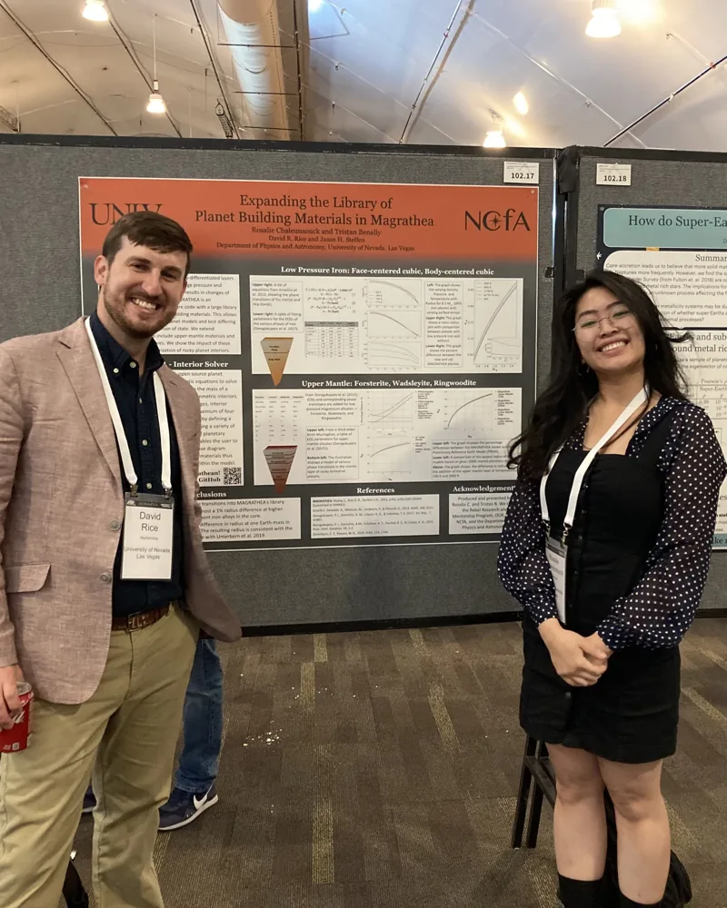
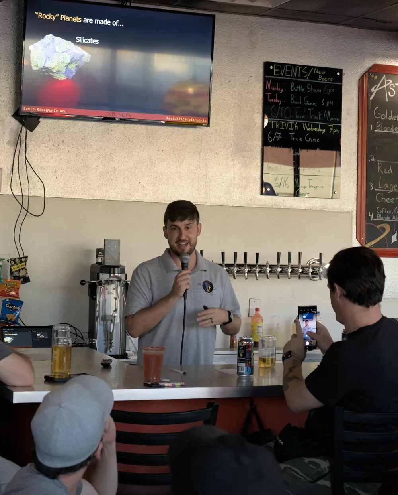

Malechi Heisler Undergraduate · UW–Madison
Inferring the compositions of K2 planets with Magrathea.
I enjoy helping students work through difficult ideas and develop the confidence to pursue their own scientific questions.
Inferring the compositions of K2 planets with Magrathea.
Testing how undetected planets affect gap complexity and our descriptions of orbital spacing.
Krishang Mittal (UW Undergrad) contributed to Magrathea v2 and coauthored its software paper. Srivishal Sudharsan (High school student) worked on 3D interior visualizations in Blender, and Rosalie Chaleunsouck (UNLV Undergrad) studied upper-mantle materials in Magrathea and presented at Exoplanets IV.
I also support student science through reviewing for the Journal of Emerging Investigators.

I taught laboratory courses in mechanics, electromagnetism, and general physics to majors and non-majors, helping students connect measurements and physical models.
I co-developed and taught four five-day astronomy camps in 2023–2024, reaching 50 middle-school students with topics from planets to cosmology.
Visit Camp CosmosAfter undergraduate, I taught small-group algebra and geometry classes at Phillips Academy High School, tailoring instruction to individual students.
About SAGA Education
I founded and emceed Astronomy on Tap, Las Vegas, bringing researchers and community members together for astronomy talks and intense trivia.
I have also shared astronomy with school classes through Skype a Scientist, with the Las Vegas Astronomical Society, and through public events.